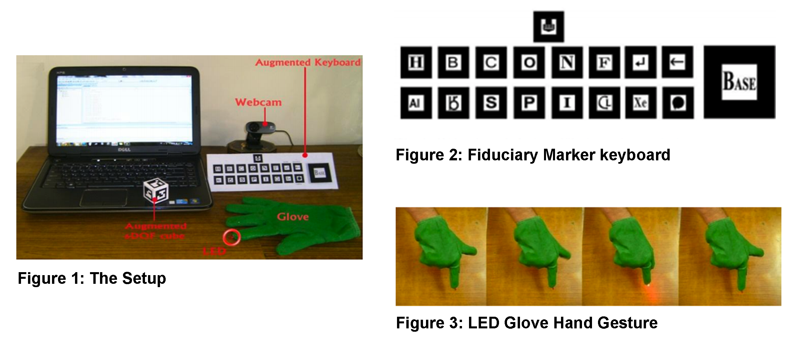

CHALLENGE
School teaching methodologies have evolved much over
centuries. Recently, new technologies have appeared in the
classroom. For example, it is common to see PowerPoint
presentations and use networked platforms like Moodle [13].
Using these new technologies does not imply an increased
interaction between students and the teachers. In fact, many
times information keeps on flowing in just one direction, from
the teachers to the students. For students to learn more and
better, education has to be both experimental and interactive.
We learn more from hands-on experiences than from
traditional lectures. AR is mature enough to be applied to
many everyday activities.
We are interested in applying AR to Chemistry education at
the school level. Specifically, letting them see different
elements and their reactions with other elements in a 3D environment rather than their 2D textbooks.
PROCESS
Requirements
The basic purpose of the project is to help increase the understanding of 3-D chemistry modeling and spatial arrangement of molecular structures in space. With the help of advanced AR technology (e.g. adding computer vision) the information about the surrounding real world becomes interactive and digitally tractable.
Development
In this project we want the students to intuitively build the molecular structures based on their chemical formulae, so we propose to use the AR technology for exhibiting the models. The layer of the model will be superimposed on a fiduciary marker. Apart from the rotation through the markers along the z-axis, a cube consisting of six markers is provided to rotate the 3D model along x, y and z-axes. For this, we will be using ARToolKit library (HTLab, 2007) which allows marker identification, position, and orientation calculation.

For the purpose of input, a keyboard of markers is designed
which will help the user to effectively select the atoms to form the desired molecule as shown in figure 2.
The marker pattern in
the keyboard has been designed to keep each key unique and
distinguishable [17]. The user has to click on the requisite
marker for the element to be added to the base marker. To
register a click on the selected element we have defined a
simple gesture using the thumb and forefinger as shown in
figure 3.
This gesture completes the LED circuit and it glows
at the tip of the forefinger. The element which the forefinger
is pointing to is selected. The LED tip is detected by analyzing
image for proper HSV color and getting the contour using
OpenCV library, this is based on the Collision Detection and
Direction finding.
OUTCOME
In our interaction with various school students, we concluded the major problems in understanding 3-D structures in VSEPR theory were related to difficulty in visualizing the spatial arrangement of different atoms in 3-D space, bond formation and type of bonding among different atoms of molecule and bond angle and lone pair influence on the existing bond. In Augmented Chemistry our purpose was to solve these problems in a manner in which we can develop among students a much greater understanding and interest for the topic. The fiduciary marker keyboard coupled with hand glove with LED makes the input easy and interactive. The setup of the program is inexpensive with only a webcam and tangible artifacts like glove and cube as external requirements.